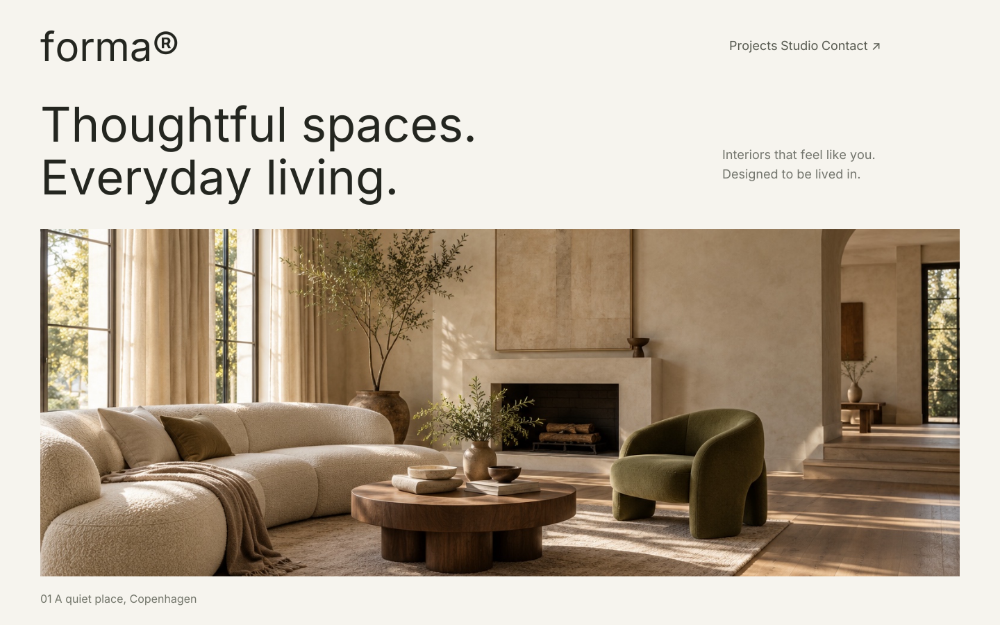
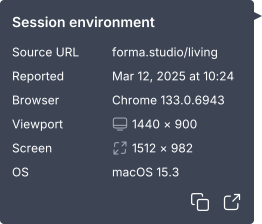
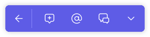
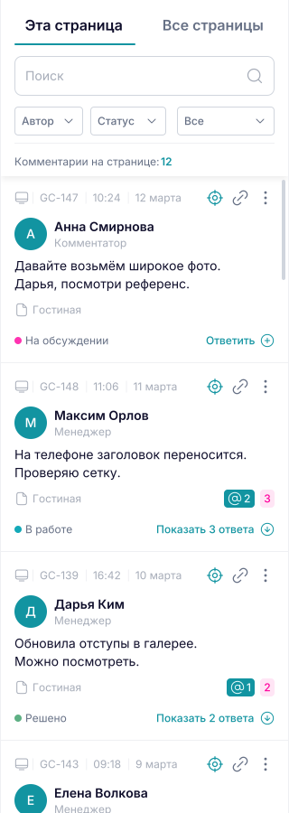
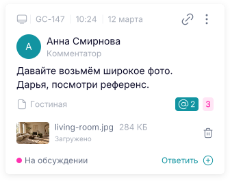
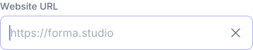
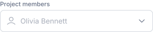

GoComment.
B2B SaaSWeb & Mobile
Все правки к сайту в одном месте
Помогла превратить внутренний инструмент дизайн-бюро в коммерческий сервис для совместного ревью сайтов.
Сайт продукта- Моя роль
- Продуктовый дизайнер
- Период
- Июль 2023 – Июнь 2025
- Зона ответственности
- Виджет, кабинет, мобильная версия



01 / Контекст
«Поменяйте
эту кнопку»
Какую кнопку? На какой странице? А в каком браузере это сломалось?
GoComment появился внутри дизайн-бюро, где параллельно разрабатывали и поддерживали много сайтов. Заказчики присылали правки в мессенджеры и на почту. Иногда доходило до фотографий бумажных набросков.
Менеджер собирал сообщения, уточнял детали и передавал их команде. Дизайнеры и тестировщики тоже находили проблемы, но разработчикам приходилось отдельно выяснять, на каком устройстве и при каких условиях они возникли.
Одна правка, несколько мест для обсуждения
А здесь можно
кнопку покрупнее?
У меня поехала
мобильная версия
И ещё поправьте
текст из прошлого письма
Иллюстрация типичных ситуаций из практики бюро
Моя часть работы
Большую часть проекта была единственным дизайнером. Проектировала сценарии и интерфейс, собирала библиотеку компонентов, обсуждала реализацию с разработчиками. В первые месяцы координировала младшего дизайнера.
Как принимали решения
Продакт и маркетолог собирали исследования и обратную связь. Вместе разбирали выводы и задачи. Я предлагала дизайн-решения, согласовывала их с командой и дорабатывала после релиза. CEO и CTO участвовали как ключевые стейкхолдеры.
02 / Работа с правками
Контекст остаётся
рядом с правкой
Мы собрали заказчиков, менеджеров, дизайнеров и разработчиков прямо на сайте, который они обсуждают. Человек выбирает место и оставляет комментарий. Переписка и статус сохраняются рядом с ним.
Для сообщения о баге важен не только текст. В комментарии можно посмотреть среду, в которой он был оставлен. А если обсуждение становится задачей, его можно передать в подключённый таск-трекер.
Привязка к месту
Команда видит, какой элемент обсуждается, и может вернуться к нему из списка правок.
Среда автора
Браузер, ОС и параметры экрана помогают воспроизвести проблему.
Следующее действие
В обсуждении есть ответы, упоминания, вложения и статусы. Правку можно передать в таск-трекер.
От обсуждения к задаче
Если правка требует работы, её можно отправить в подключённый таск-трекер прямо из комментария. Ссылка на страницу, среда автора и вложения помогают передать контекст разработчику.
Создать задачу из комментария
Команда выбирает Add task в меню правки.
Передать контекст вместе с правкой
Остаётся уточнить задачу и отправить её в работу.
Когда сайтов много
В кабинете собраны проекты, участники, настройки подключения и подписка. На уровне проекта можно посмотреть новые комментарии, упоминания и состояние задач.
03 / Первый опыт
Сначала попробовать, а потом подключить свой сайт
До установки виджета было сложно почувствовать пользу продукта.
Для подключения своего сайта требовалось добавить код виджета. Часто это означало обратиться к разработчику. При этом команда видела потери пользователей на этапе создания первого проекта.
Нужно было дать человеку возможность разобраться в GoComment ещё до того, как он организует установку.
Объяснить в видео
Записать работу интерфейса с голосовым сопровождением. На лендинге уже была короткая видеодемонстрация.
Дать попробовать руками
Открыть готовый демо-проект с установленным виджетом. Пользователь сам исследует комментарии и взаимодействует с интерфейсом.
Подсказки по желанию
В демо можно было пройти небольшой тур с тултипами или сразу изучать интерфейс самостоятельно. Я предложила оставить этот выбор пользователю: часть виджета достаточно проста, чтобы начать без обязательного обучения.
Посмотреть, как устроены комментарии
В готовом проекте уже есть правки, метки и панель обсуждений.
Перейти к своей правке
Подсказка показывает, как включить режим комментирования.
Продолжить обсуждение
Упоминание приводит пользователя к ответам команды.
Тур можно пропустить на любом шаге и исследовать виджет самостоятельно.
Следующим шагом упростили создание проекта
Вынесли поле со ссылкой на сайт прямо на главный экран. Приглашение участников и установку виджета сделали необязательными на этом этапе. Проект уже можно было создать, а к настройке вернуться позже.
Вставить ссылку
Достаточно указать адрес сайта на главном экране, чтобы создать свой первый проект.
Подключить удобным способом
Проект уже сохранён. Установить виджет можно с помощью кода или браузерного расширения.
Что изменилось
Команда отслеживала использование демо, прохождение подсказок и конверсию из регистрации в создание проекта. После изменений продакт отмечал рост этой конверсии. Следующим развитием подключения стало браузерное расширение.
04 / Мобильная версия
Ревью продолжается
с телефона
Мобильную версию заложили в развитие с самого начала. Она решала две задачи: проверять сайт на телефоне и участвовать в обсуждении, когда компьютера рядом нет.
Заказчики могли просматривать сайт на ходу. А дизайнеру или разработчику могло понадобиться ответить на упоминание в десктопной правке. Для этого с телефона оставили доступ к обоим спискам комментариев.
Оба списка правок под рукой
Мобильные и десктопные комментарии можно просматривать отдельно.
Разделить версии и сохранить обсуждение
Кнопка с компьютером открывает десктопные комментарии отдельным списком. В этом режиме информационный тултип объясняет, почему правки не привязаны к контенту на телефоне. К мобильным комментариям можно вернуться кнопкой с телефоном и стрелкой.
05 / Развитие
Подготовить продукт
ко второму рынку
Пока GoComment развивался за рубежом, стейкхолдеры стали получать запросы от российских компаний с поточной веб-разработкой. Для них понадобились русскоязычный интерфейс и небольшая визуальная адаптация.
Я сама перевела интерфейс с английского, перенесла библиотеку на переменные Figma и через них адаптировала тексты и цветовую схему. Дизайн был готов менее чем за месяц; в течение этого времени уже передавала части работы в разработку.
GoComment
EnglishКомментим
Русский

UI Kit
Система, которая росла вместе с продуктом
Библиотека насчитывает около 100 компонентов. К каждому я подготовила спецификации с описанием поведения и состояний. Готовые компоненты и понятная документация помогали быстрее разрабатывать и выпускать новые сценарии. Новым разработчикам было проще подключаться к проекту.


GoCommentpluto
Комментимvenus
06 / Результат
От инструмента для себя
к платному продукту
За время моей работы GoComment прошёл путь от проектирования MVP до платных подписок и Enterprise-продаж. К моему уходу российская версия уже была запущена и начинались первые продажи.
Как продукт приносил выручку
GoComment продавался по подписке. Тариф определял доступный объём работы, а команда могла расширять его по мере роста.
Платные тарифы
Для совместной работы команды оформляли подписку с лимитами на пользователей и проекты.
Дополнительные места и проекты
Если лимитов тарифа не хватало, можно было докупить места для участников и новые проекты.
Enterprise для компаний
Корпоративные клиенты покупали Enterprise. Часть продаж проходила через презентации и прямую работу с компаниями.
Инструмент для своей команды
Собрали работу над правками в бюро и спроектировали MVP.
Самостоятельный сервис
Развивали продукт для внешних клиентов. Появились платные подписки и Enterprise-продажи.
Выход на второй рынок
Запустили русскоязычную версию. К моему уходу начались первые продажи.
Что бы я сделала иначе
Раньше вернулась бы к приоритету расширения
В первом MVP для подключения своего сайта требовалась установка кода. Демо помогало попробовать виджет, но зависимость от разработчика сохранялась. Сегодня я бы раньше вынесла на обсуждение запуск расширения: с ним человек мог быстрее начать работу на своём сайте.
Разделила бы права, специализацию и тему правки
Для MVP мы выбрали три роли: администратор, менеджер и комментатор. На следующем этапе я бы выделила владельца пространства, который управляет подпиской и участниками. Специализацию человека и категории правок оставила бы отдельными признаками.
Теги «дизайн», «разработка» и «тексты» уже были в бэклоге, но до реализации не дошли. Моя гипотеза: с ними команде было бы проще распределять правки. Проверяла бы это по времени от комментария до назначения ответственного.
Чему я научилась
Научилась самостоятельно вести дизайн продукта от первых сценариев до запуска и развития. Без старшего дизайнера рядом отвечала за связность виджета, кабинета и мобильной версии. В первые месяцы также координировала младшего дизайнера.
Стала теснее работать с разработчиками: обсуждала реализацию, описывала поведение и состояния компонентов в спецификациях. Научилась выстраивать систему, которую команда могла развивать дальше: библиотека помогала добавлять новые сценарии, а переменные позволили адаптировать интерфейс для второго рынка.